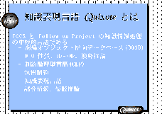

<html>
<head>
<title> Slide No.2 </title>
</head>

<frameset rows="430,130">

<noframes>
<body>
<a href="GIF/slide2.GIF"></a>

<a href="AU/voice2.au">
	</a>[314K]<p>
<!--		-->
<b> Quixote </b> は、<b> ICOT </b> とその後継プロジェクトの
知識情報処理の中核言語として設計されました。
主な <a href=""> 特徴 </a> として、次の３つが挙げられます。<p>

まず、<b> Quixote </b> は、オブジェクト指向の性質、ルール、演繹推論を
持つ <a href=""> 演繹オブジェクト指向データベース言語 </a>
の一つです。<p>

次に、<b> Quixote </b> は、包摂制約に基づいた
<a href=""> 制約論理型言語 </a> の一つでもあります。<p>

３つ目は、部分情報、仮説推論を扱える
<a href=""> 知識表現言語 </a> とも言えます。<p>

次に、<b> Quixote </b> の誕生までを簡単に説明しましょう。
<p>
<!--		-->

<hr>
<a href="slide3.html" target="_top">次の OHP へ</a>
<br><br>
<a href="slide1.html" target="_top">前の OHP へ</a>
<br><br>
<a href="HomePage.html" target="_top">OHP の一覧へ</a>
</body>
</noframes>

<frame src="onlyslide2.html">
<frame src="buttonexpla2.html">

</frameset>

</html>
